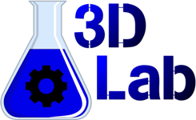
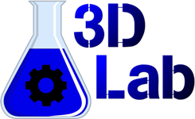

|  |
Разработка 3D-принтеров и фотополимеров |
|
|  |
Разработка 3D-принтеров и фотополимеров |
|

Полимер, предназначенный для DLP-принтеров с малой и средней областями печати и LCD-принтеров (Wanhao D7, KLD-LCD1260). Применяется для печати мастер-моделей и декоративных изделий. Совместим с силиконами на платиновом катализаторе. Поверхность резиноподобная, удовлетворительно красится и отлично обрабатывается механически. Цвет красный-полупрозрачный. В неотвержденном состоянии невязкая жидкость со слабым нейтральным запахом.

Очень быстрый полупрозрачный полимер, предназначенный для LCD-принтеров (Wanhao D7, KLD-LCD1260) и SLA-принтеров (RK-1). В отвержденном состоянии близок к акрилу по физико-механическим свойствам. Поверхность твердая, отлично красится и обрабатывается механически. Не совместим с силиконами на платиновом катализаторе. В неотвержденном состоянии вязкая жидкость со слабым нейтральным запахом.

Очень быстрый полимер, предназначенный для DLP-принтеров с большой областью печати (от 120мм по оси X) и LCD-принтеров (Wanhao D7, KLD-LCD1260). Цвет красный-полупрозрачный. В отвержденном состоянии близок к акрилу по физико-механическим свойствам. Поверхность твердая, отлично красится и обрабатывается механически. Не совместим с силиконами на платиновом катализаторе. В неотвержденном состоянии вязкая жидкость со слабым нейтральным запахом.

Жидкость для промывки распечатанных моделей. После промывки остатки растворителя смываются водой или изопропиловым спиртом.